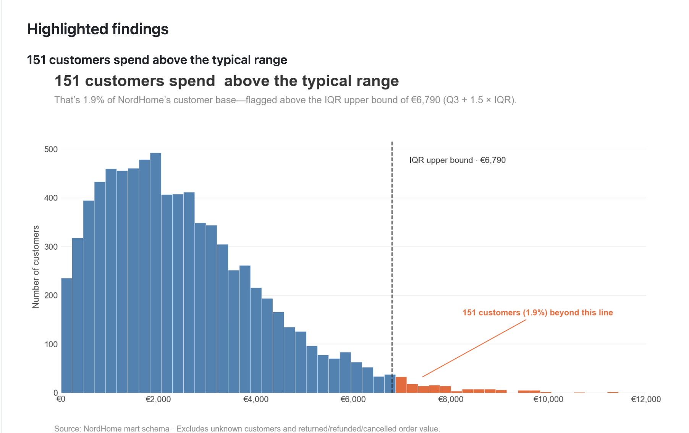

Data Analyst & Business Analyst
Ich baue Datenmodelle, die Geschäftsfragen beantworten.
Im Dunkeln kann man sich bewegen, aber man weiß nicht, wohin man geht. Gute Daten schaffen Orientierung – sie zeigen, was passiert, wo Probleme entstehen und wo Chancen liegen. Ich helfe Unternehmen, diese Orientierung aus ihren Daten zu gewinnen.
- 166.000+Zeilen im Flagship-Projekt
- 4Faktentabellen im Star Schema
- 6Projekte im Portfolio
- 7Jahre in Deutschland
Ausgewählte Arbeiten
Projekte
 In Arbeit
NordHome Retail Analytics
In Arbeit
NordHome Retail Analytics
Data Warehouse nach Kimball, ETL in PostgreSQL und ein Power-BI-Report für den Halbjahresrückblick 2024.

Abgeschlossen Datenvisualisierung & EDAExplorative Analysen mit klarer redaktioneller Aussage — Ausreißer, Bestseller, Kundenstruktur.
Wissenschaftlicher Kursbericht zum Vergleich zweier Modellierungsansätze im Data Warehousing.
Eine wachsende Referenzsammlung: pro Diagrammtyp eine Karte mit Einsatzzweck und Alternativen.
Batch-Pipeline: WooCommerce & GA4 per API in die Cloud, Transformation in Azure SQL, Power BI als Endpunkt.
Persönliches Wissenssystem in Notion für fünf Jahre Lernen: Anwenden, Reflektieren, Verbinden, Lehren.
Werkzeugkasten
Skills
Daten & Modellierung
- SQL (PostgreSQL), Window Functions
- Kimball Star Schema, SCD Typ 2
- Data Vault 2.0 (theoretisch)
- ETL und Datenqualität
Analyse & BI
- Power BI, DAX, Power Query
- Python (Pandas, Jupyter)
- Explorative Datenanalyse
- R und Excel (Grundlagen)
Kommunikation
- Data Storytelling
- Dashboard-Design
- Strukturiertes Berichten nach dem Pyramidenprinzip
- Deutsch und Englisch
Im Aufbau
- Statistik-Grundlagen
- Deep Learning (Uni-Kurs)
- Cloud (Azure)
Hintergrund
Über mich
Ich lebe seit rund sieben Jahren in Deutschland und studiere Digital Business Administration. Bevor ich zur Datenanalyse kam, habe ich gemeinsam mit einer Mitgründerin das Unternehmen Luandla aufgebaut und einen Online-Shop selbst umgesetzt. Dort habe ich gemerkt, wie viel in Bestell-, Kunden- und Produktdaten steckt.
Seit Februar 2026 lerne ich Datenanalyse systematisch: von Excel über SQL, Python und Power BI bis R, über Online-Kurse und meine Hochschulkurse. Mir ist wichtig, dass ich meine Ergebnisse selbstständig erarbeite und verstehe. KI-Werkzeuge nutze ich als Unterstützung, das erste Denken bleibt bei mir.
Lass uns sprechen
Kontakt
Ich suche eine Stelle als Data Analyst oder Business Analyst. Ich freue mich über eine Nachricht.